05-k8s网络
Kubernetes本身并不负责网络通信，Kubernetes提供了容器网络接口CNI（Container Network Interface），具体的网络通信交给CNI插件来负责，开源的CNI插件非常多，像Flannel、Calico。
Kubernetes虽然不负责网络，但要求集群中的Pod能够互相通信，且Pod必须通过非NAT网络连接，即收到的数据包的源IP就是发送数据包Pod的IP。
同时Pod与节点之间的通信也是通过非NAT网络。
但是Pod访问集群外部时源IP会被修改成节点的IP。
Pod内部是通过虚拟Ethernet接口对（Veth pair）与Pod外部连接
Veth pair就像一根网线，一端留在Pod内部，一端在Pod之外。
而同一个节点上的Pod通过网桥（Linux Bridge）通信，如下图所示。
创建pod，查看网络情况
[root@k8s-master-10 ~]#cat pod.yaml
apiVersion: v1
kind: Pod
metadata:
name: my-nginx-1
spec:
nodeName: k8s-node-12
containers:
- image: nginx:alpine
name: container-1
创建结果
[root@k8s-master-10 ~]#kubectl create -f pod1.yml
pod/my-nginx-1 created
[root@k8s-master-10 ~]#kubectl get po -owide
NAME READY STATUS RESTARTS AGE IP NODE NOMINATED NODE READINESS GATES
my-nginx-1 1/1 Running 0 8s 10.2.2.48 k8s-node-12 <none> <none>
[root@k8s-master-10 ~]#
同一个节点下的2个pod
apiVersion: v1
kind: Pod
metadata:
name: my-nginx-2
spec:
nodeName: k8s-node-12
containers:
- image: nginx:alpine
name: container-2
创建结果
[root@k8s-master-10 ~]#kubectl create -f pod2.yml
pod/my-nginx-2 created
[root@k8s-master-10 ~]#kubectl get po -owide
NAME READY STATUS RESTARTS AGE IP NODE NOMINATED NODE READINESS GATES
my-nginx-1 1/1 Running 0 83s 10.2.2.48 k8s-node-12 <none> <none>
my-nginx-2 1/1 Running 0 10s 10.2.2.49 k8s-node-12 <none> <none>
图解同一个Node下的Pod通信
POD（veth） > CNI(网桥) > ens33
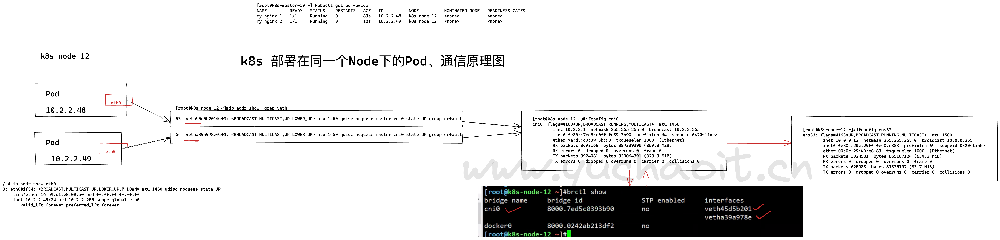
不同节点间的网桥连接有很多种方式，这跟具体实现相关。于超老师这里的环境是
但集群要求Pod的地址唯一，所以跨节点的网桥通常使用不同的地址段，以防止Pod的IP地址重复。
[root@k8s-node-12 ~]#ifconfig flannel.1
flannel.1: flags=4163<UP,BROADCAST,RUNNING,MULTICAST> mtu 1450
inet 10.2.2.0 netmask 255.255.255.255 broadcast 0.0.0.0
inet6 fe80::60e0:72ff:fec4:6c1f prefixlen 64 scopeid 0x20<link>
ether 62:e0:72:c4:6c:1f txqueuelen 0 (Ethernet)
RX packets 207 bytes 17953 (17.5 KiB)
RX errors 0 dropped 0 overruns 0 frame 0
TX packets 159 bytes 21848 (21.3 KiB)
TX errors 0 dropped 8 overruns 0 carrier 0 collisions 0
==========================================================
[root@k8s-node-11 ~]#ifconfig flannel.1
flannel.1: flags=4163<UP,BROADCAST,RUNNING,MULTICAST> mtu 1450
inet 10.2.1.0 netmask 255.255.255.255 broadcast 0.0.0.0
inet6 fe80::706a:24ff:fe23:fe83 prefixlen 64 scopeid 0x20<link>
ether 72:6a:24:23:fe:83 txqueuelen 0 (Ethernet)
RX packets 72 bytes 4648 (4.5 KiB)
RX errors 0 dropped 0 overruns 0 frame 0
TX packets 49 bytes 8314 (8.1 KiB)
TX errors 0 dropped 8 overruns 0 carrier 0 collisions 0
# 备注
纯docker自身容器走docker0网桥
k8s管理的pod管理容器网络走CNI
跨主机POD通信原理
跨节点准备好pod
apiVersion: v1
kind: Pod
metadata:
name: my-nginx-13
spec:
nodeName: k8s-node-11
containers:
- image: nginx:alpine
name: container-3
创建，查看新节点的pod
[root@k8s-master-10 ~]#kubectl create -f pod-3.yml
pod/my-nginx-13 created
跨节点pod通信情况
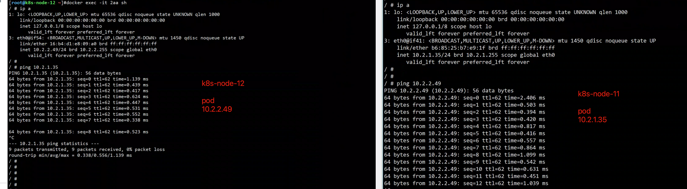
跨节点pod通信原理图
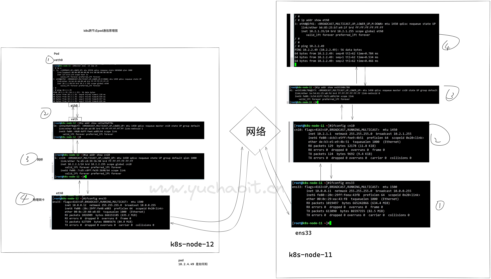
以上就是k8s pod通信底层视角，k8s再次基础之上，再向用户提供集群外部访问入口。
具体就是看Service、Ingress资源。
1.Service
查看官网解释service资源
[root@k8s-master-10 ~]#kubectl explain service
Pod创建完成后，如何访问Pod呢？直接访问Pod会有如下几个问题：
- Pod会随时被Deployment这样的控制器删除重建，那访问Pod的结果就会变得不可预知。（ip动态）
- Pod的IP地址是在Pod启动后才被分配，在启动前并不知道Pod的IP地址。
- 应用往往都是由多个运行相同镜像的一组Pod组成，逐个访问Pod也变得不现实。（负载均衡入口）
举个例子，假设有这样一个应用程序，使用Deployment创建了前台和后台，前台会调用后台做一些计算处理
后台运行了3个Pod，这些Pod是相互独立且可被替换的，当Pod出现状况被重建时，新建的Pod的IP地址是新IP
前台的Pod无法直接感知。
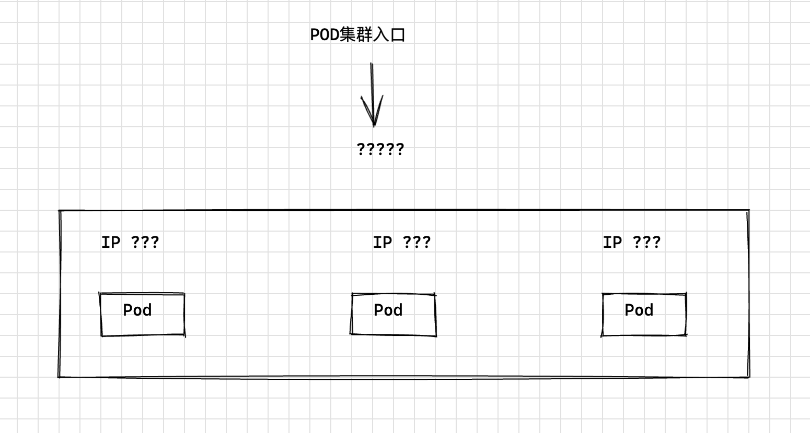
Service解决Pod访问问题
Kubernetes中的Service对象就是用来解决上述Pod访问问题的。
Service有一个固定IP地址，Service将访问它的流量转发给Pod，具体转发给哪些Pod通过Label来选择，而且Service可以给这些Pod做负载均衡。
那么对于上面的例子，为后台添加一个Service，通过Service来访问Pod，这样前台Pod就无需感知后台Pod的变化。
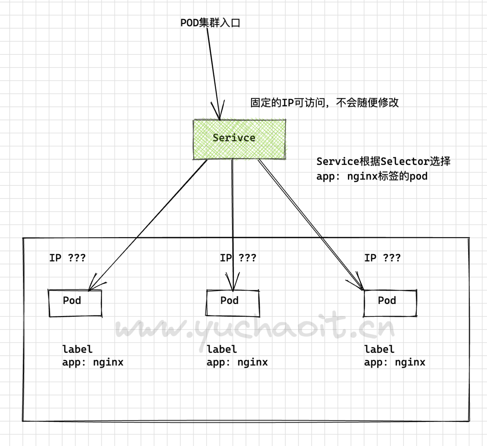
创建3个后端Pod
# 基于deployment创建3个pod，加上标签。
apiVersion: apps/v1
kind: Deployment
metadata:
name: nginx
namespace: yuchaoit
spec:
replicas: 3
selector:
matchLabels:
app: nginx
template:
metadata:
labels:
app: nginx
spec:
containers:
- image: nginx:latest
name: container-0
resources:
limits:
cpu: 100m
memory: 200Mi
requests:
cpu: 100m
memory: 200Mi
创建查看pod
[root@k8s-master-10 ~]#kubectl create -f deploy-nginx.yml
deployment.apps/nginx created
[root@k8s-master-10 ~]#kubectl -n yuchaoit get po -owide
NAME READY STATUS RESTARTS AGE IP NODE NOMINATED NODE READINESS GATES
nginx-56d58c56c7-99dfv 1/1 Running 0 37s 10.2.1.37 k8s-node-11 <none> <none>
nginx-56d58c56c7-frwxx 1/1 Running 0 37s 10.2.2.50 k8s-node-12 <none> <none>
nginx-56d58c56c7-j2xn2 1/1 Running 0 37s 10.2.1.36 k8s-node-11 <none> <none>
[root@k8s-master-10 ~]#
创建Service资源
三种Service类型IP
https://kubernetes.io/zh-cn/docs/concepts/services-networking/service/
[root@k8s-master-10 ~]#kubectl explain Service.spec.type
NodeIP 节点对外提供访问的IP
ClusterIP 用来提供动态发现、负载均衡Pod的IP
PodIP 提供Pod使用的IP
创建ClusterIP
下面示例创建一个名为“nginx”的Service，通过selector选择到标签“app:nginx”的Pod，目标Pod的端口为80，Service对外暴露的端口为8080。
访问服务只需要通过“服务名称:对外暴露的端口”接口，对应本例即“nginx:8080”。
这样，在其他Pod中，只需要通过“nginx:8080”就可以访问到“nginx”关联的Pod。
apiVersion: v1
kind: Service
metadata:
name: nginx # Service的名称
namespace: yuchaoit
spec:
selector: # Label Selector，选择包含app=nginx标签的Pod
app: nginx
ports:
- name: service0
targetPort: 80 # Pod的端口
port: 80 # Service对外暴露的端口，也就是ClusterIP的port
protocol: TCP # 转发协议类型，支持TCP和UDP
type: ClusterIP # Service的类型
查看svc
[root@k8s-master-10 ~]#kubectl create -f svc-nginx.yml
service/nginx created
[root@k8s-master-10 ~]#kubectl -n yuchaoit get svc -owide
NAME TYPE CLUSTER-IP EXTERNAL-IP PORT(S) AGE SELECTOR
nginx ClusterIP 10.1.15.2 <none> 80/TCP 5s app=nginx
可以看到Service有个Cluster IP，这个IP是固定不变的，除非Service被删除，所以也可以使用ClusterIP在集群内部访问Service。
此时ClusterIP也只是集群内的IP，只能在集群内访问到后端Pod。
图解Service和pod关系
下面创建一个Pod并进入容器，使用ClusterIP访问Pod，可以看到能直接返回内容。
[root@k8s-master-10 ~]#kubectl -n yuchaoit run -it --image nginx:alpine test-pod --rm /bin/sh
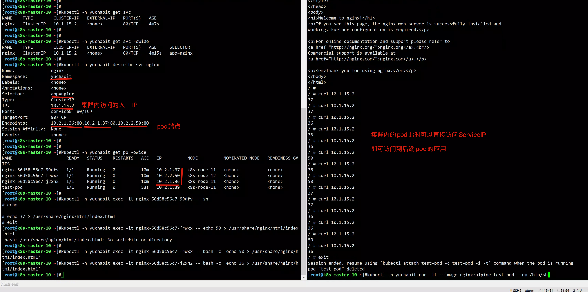
服务发现原理
1.k8s内置DNS插件CoreDNS，实现在k8s集群中以DNS服务提供名称解析
2.CoreDNS为每一个pod提供Service的名称解析服务
- 可以查看每一个pod的dns解析文件，查看nameserver，其实就是CoreDNS自己的ClusterIp
- 是因为安装了CoreDNS集群后，在kubelet配置文件里，默认添加了参数
[root@k8s-master-10 ~]#cat /var/lib/kubelet/config.yaml
clusterDNS:
- 10.1.0.10
clusterDomain: cluster.local
因此每一个pod在被创建时，默认使用该DNS服务器。
在每一个pod中都可以基于如下规则，访问Service
servicename.default.svc.cluster.local
servicename.namespace
servicename
使用ServiceName访问Service
k8s集群内默认提供了DNS解析插件coredns
在kube-system命名空间下可以查看到CoreDNS的Pod。
[root@k8s-master-10 ~]#kubectl get po -n kube-system --show-labels -l k8s-app=kube-dns
NAME READY STATUS RESTARTS AGE LABELS
coredns-6d56c8448f-g6m9z 1/1 Running 1 7d6h k8s-app=kube-dns,pod-template-hash=6d56c8448f
coredns-6d56c8448f-ws7rb 1/1 Running 1 7d6h k8s-app=kube-dns,pod-template-hash=6d56c8448f
CoreDNS安装成功后会成为DNS服务器，当创建Service后，CoreDNS会将Service的名称与IP记录起来，这样Pod就可以通过向CoreDNS查询Service的名称获得Service的IP地址。
访问时通过nginx.
在实际使用中，在同一个命名空间下可以省略
例如上面创建的名为nginx的Service，直接通过“nginx:80”就可以访问到Service，进而访问后台Pod。
使用ServiceName的方式有个主要的优点就是可以在开发应用程序时可以将ServiceName写在程序中，这样无需感知具体Service的IP地址。
下面创建一个Pod并进入容器，查询nginx域名的地址，可以发现是解析出nginx这个Service的IP地址10.1.15.2
同时访问Service的域名，可以看到能直接返回内容。
# 注意pod创建，添加namespace
[root@k8s-master-10 ~]#kubectl run -n yuchaoit -i --tty --image tutum/dnsutils dnsutils --restart=Never --rm /bin/sh
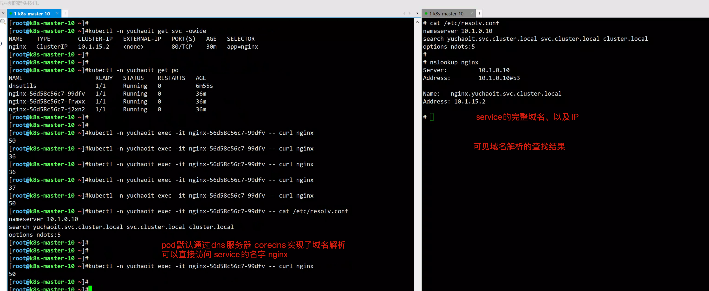
图中使用的dns服务器地址，是默认的kube-dns Service地址
[root@k8s-master-10 ~]#kubectl -n kube-system get svc -owide
NAME TYPE CLUSTER-IP EXTERNAL-IP PORT(S) AGE SELECTOR
kube-dns ClusterIP 10.1.0.10 <none> 53/UDP,53/TCP,9153/TCP 7d7h k8s-app=kube-dns
Service怎么找到后端pod？
试试修改deployment部署的pod副本数
[root@k8s-master-10 ~]#kubectl -n yuchaoit edit deployments.apps nginx
deployment.apps/nginx edited
改为2个pod即可
[root@k8s-master-10 ~]#kubectl -n yuchaoit get po -owide
NAME READY STATUS RESTARTS AGE IP NODE NOMINATED NODE READINESS GATES
nginx-56d58c56c7-frwxx 1/1 Running 0 59m 10.2.2.50 k8s-node-12 <none> <none>
nginx-56d58c56c7-pndzz 1/1 Running 0 11m 10.2.2.58 k8s-node-12 <none> <none>
再次查看svc信息
[root@k8s-master-10 ~]#
[root@k8s-master-10 ~]#kubectl -n yuchaoit describe service nginx
Name: nginx
Namespace: yuchaoit
Labels: <none>
Annotations: <none>
Selector: app=nginx
Type: ClusterIP
IP: 10.1.15.2
Port: service0 80/TCP
TargetPort: 80/TCP
Endpoints: 10.2.2.50:80,10.2.2.58:80
Session Affinity: None
Events: <none>
可以看到，pod变化后，service自动发现了pod更新的数量，都是基于label选择器发现的pod。
Endpoints资源
Endpoints也是一种资源，k8s通过该资源监控pod的IP，实现让Service能发现Pod。
记录的就是Pod的IP了。
[root@k8s-master-10 ~]#kubectl -n yuchaoit get endpoints
NAME ENDPOINTS AGE
nginx 10.2.2.50:80,10.2.2.58:80 59m
[root@k8s-master-10 ~]#kubectl -n yuchaoit describe endpoints nginx
Name: nginx
Namespace: yuchaoit
Labels: <none>
Annotations: <none>
Subsets:
Addresses: 10.2.2.50,10.2.2.58
NotReadyAddresses: <none>
Ports:
Name Port Protocol
---- ---- --------
service0 80 TCP
Events: <none>
图解service和pod关系
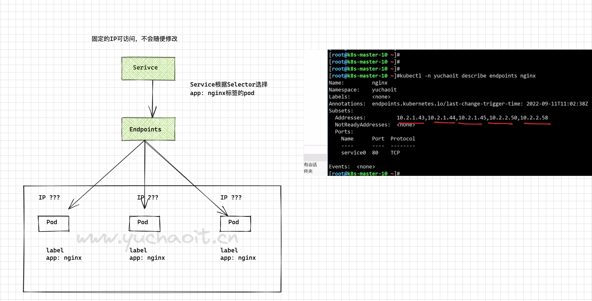
此时随意你修改Deployment控制器的pod副本，endpoints都会监听pod地址信息。
Service访问原理
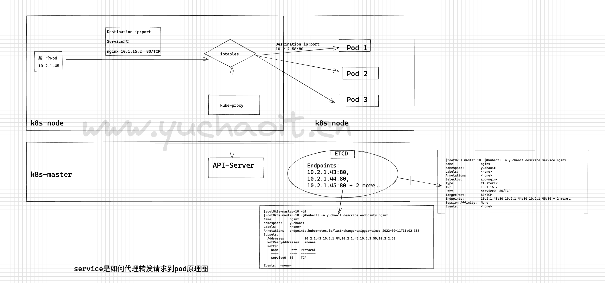
Service的类型与使用场景
Service的类型除了ClusterIP还有NodePort、LoadBalancer和None，这几种类型的Service有着不同的用途。
- ClusterIP：用于在集群内部互相访问的场景，通过ClusterIP访问Service。
- NodePort：用于从集群外部访问的场景，通过节点上的端口访问Service，详细介绍请参见NodePort类型的Service。
- LoadBalancer：用于从集群外部访问的场景，其实是NodePort的扩展，通过一个特定的LoadBalancer访问Service，这个LoadBalancer将请求转发到节点的NodePort，而外部只需要访问LoadBalancer，详细介绍请参见LoadBalancer类型的Service。
- None：用于Pod间的互相发现，这种类型的Service又叫Headless Service，详细介绍请参见Headless Service。
NodePort类型的Service
NodePort类型的Service可以让Kubemetes集群每个节点上保留一个相同的端口， 外部访问连接首先访问节点IP:Port，然后将这些连接转发给服务对应的Pod。
图解NodePort
也就是以前的端口映射场景，会占用宿主机一个port。
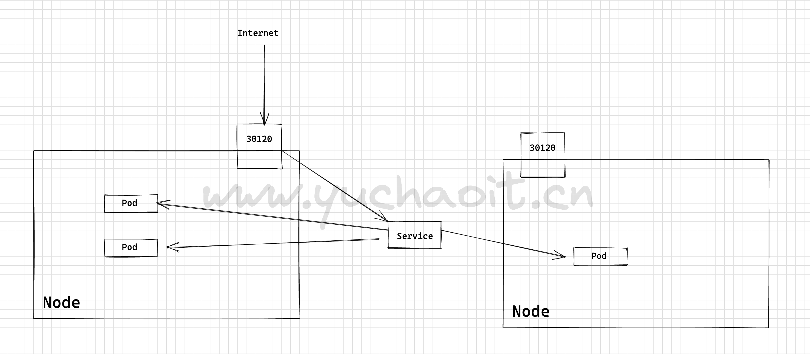
下面是一个创建NodePort类型的Service。创建完成后，可以通过节点的IP:Port访问到后台Pod。
yaml
apiVersion: v1
kind: Service
metadata:
name: nodeport-service
namespace: yuchaoit
spec:
type: NodePort
ports:
- port: 8080 # service的8080端口
targetPort: 80 # 目标pod的端口
nodePort: 30120 # 宿主机暴露的端口
name: service1 # 若不指定，svc里显示unset
selector: # 标签选择器
app: nginx
创建nodePort类型SVC
[root@k8s-master-10 ~]#kubectl create -f nodeport.yml
service/nodeport-service created
[root@k8s-master-10 ~]#kubectl -n yuchaoit get svc -owide
NAME TYPE CLUSTER-IP EXTERNAL-IP PORT(S) AGE SELECTOR
nginx ClusterIP 10.1.15.2 <none> 80/TCP 85m app=nginx
nodeport-service NodePort 10.1.134.13 <none> 8080:30120/TCP 24s app=nginx
[root@k8s-master-10 ~]#netstat -tunlp |grep 30120
tcp 0 0 0.0.0.0:30120 0.0.0.0:* LISTEN 11849/kube-proxy
# 集群里每一个节点都会暴露30120端口。
访问NodePort类型SVC
先修改pod的nginx页面，容易对比效果
[root@k8s-master-10 ~]#kubectl -n yuchaoit get po
NAME READY STATUS RESTARTS AGE
nginx-56d58c56c7-frwxx 1/1 Running 0 104m
nginx-56d58c56c7-pndzz 1/1 Running 0 56m
[root@k8s-master-10 ~]#
[root@k8s-master-10 ~]#kubectl -n yuchaoit exec -it nginx-56d58c56c7-frwxx -- bash -c 'echo frwxx > /usr/share/nginx/html/index.html'
[root@k8s-master-10 ~]#kubectl -n yuchaoit exec -it nginx-56d58c56c7-pndzz -- bash -c 'echo pndzz > /usr/share/nginx/html/index.html'
[root@k8s-master-10 ~]#
浏览器访问任意一个节点的:30120端口即可。
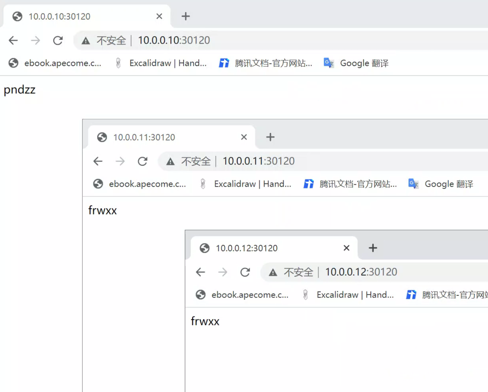
2.Ingress资源
https://kubernetes.io/zh-cn/docs/concepts/services-networking/ingress/
Ingress 是对集群中服务的外部访问进行管理的 API 对象，典型的访问方式是 HTTP。
Ingress 可以提供负载均衡、SSL 终结和基于名称的虚拟托管。
为什么会出现Ingress
将应用部署在k8s中，也就是pod后，如何在集群内访问、以及如何在集群外访问，才是核心目的，毕竟还是以web项目为主。
1.在没有ingress（入口）之前，pod对集群外提供访问，只能通过NodePort方式，也就是端口映射方式，但是这个缺点很明显，一个Node上的port有限，并且不能重复使用。
podA占用了80端口，其他服务就无法使用了。
2.我们上一节使用的Service且NodePort类型，是基于四层的代理转发，基于TCP、UDP协议转发。
缺点已经说过了，就像早期于超老师带着大家学nginx一样，Nginx也是支持基于四层、七层的代理转发的。
很明显，基于七层的http转发，粒度更细，能直接基于域名区分请求。
基于七层的http、https协议转发，以及通过域名、路径的转发，能实现更细粒度的请求划分，并且解决端口问题。
【思考下多端口虚拟主机、多域名虚拟主机，是不是区别很大？】
3.为了解决这个问题，Ingress控制器资源出现了，作用就是实现七层的协议转发，通过域名、路径的匹配转发，提供k8s集群的访问入口。
4.有同学想，既然nginx可以实现传统的七层代理转发，为什么还要有ingress？
毕竟你要注意你的应用，以pod形式在k8s环境内运行，外部的nginx无法动态发现k8s创建的资源。
5.k8s下的ingress控制器，具体实现的产品，有ingress-nginx、traefik。
图解Ingress工作原理
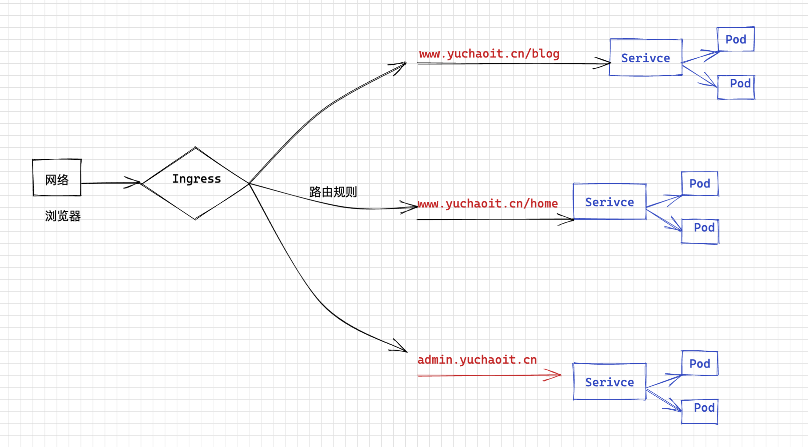
Ingress工作机制
想要使用Ingress功能，得先在k8s集群上安装ingress controller。
目前也有很多种软件实现了Ingress控制器，官网维护的就是
https://github.com/kubernetes/ingress-nginx
也有其他厂商各自研发的Ingress控制器。
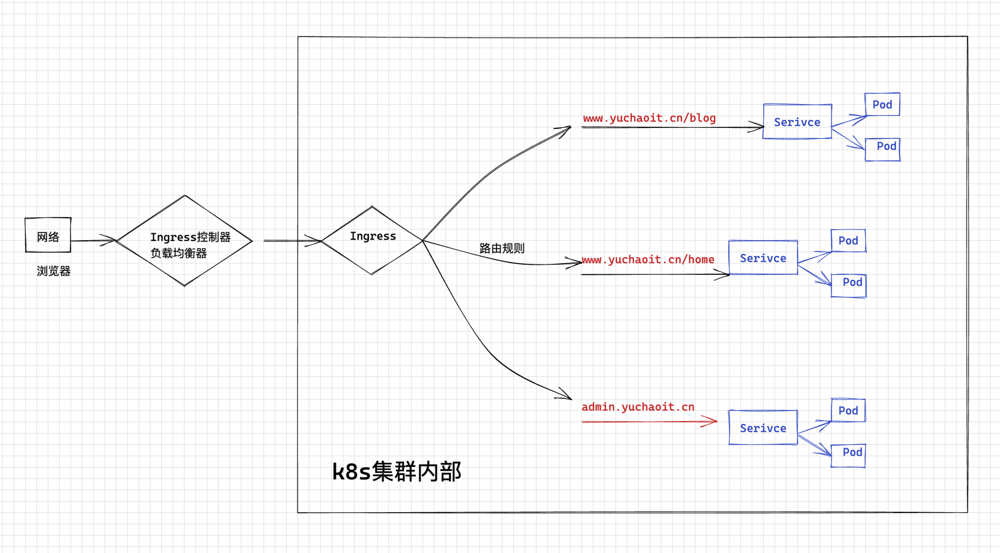
外部请求先到达Ingress控制器，控制器根据路由规则，找到对应的Service，然后通过Endpoint记录的pod地址列表，将请求最终转发给pod。
创建基于域名的Ingress
https://kubernetes.io/zh-cn/docs/concepts/services-networking/ingress/#path-types
先安装ingress-nginx，使用k8s权威指南第五版的ingress.yaml即可。
https://github.com/kubeguide/K8sDefinitiveGuide-V5-Sourcecode/blob/main/Chapter04/4.6.1%20ingress.yaml
创建Ingress-nginx控制器
[root@k8s-master-10 ~/ingress]#kubectl apply -f ingress.yml
namespace/nginx-ingress created
serviceaccount/nginx-ingress created
clusterrole.rbac.authorization.k8s.io/nginx-ingress created
clusterrolebinding.rbac.authorization.k8s.io/nginx-ingress created
secret/default-server-secret created
configmap/nginx-config created
deployment.apps/nginx-ingress created
# [root@k8s-master-10 ~/ingress]#kubectl -n nginx-ingress describe po nginx-ingress-75c88594dc-klfqc
# 发现需要有node-Selector
# 给节点打上标签
[root@k8s-master-10 ~/ingress]#kubectl label nodes k8s-master-10 role=ingress-nginx-controller
# 又发现，k8s-master默认有污点，pod不能容忍，因此没法部署。
设置master也参与pod调度
[root@k8s-master-10 ~/ingress]#kubectl describe nodes k8s-master-10 |grep Taint
Taints: node-role.kubernetes.io/master:NoSchedule
# 去掉污点
kubectl taint node k8s-master-10 node-role.kubernetes.io/master:NoSchedule-
验证ingress-nginx控制正常
[root@k8s-master-10 ~/ingress]#kubectl -n nginx-ingress get po -owide
NAME READY STATUS RESTARTS AGE IP NODE NOMINATED NODE READINESS GATES
nginx-ingress-75c88594dc-klfqc 1/1 Running 0 7m47s 10.2.0.6 k8s-master-10 <none> <none>
[root@k8s-master-10 ~/ingress]#kubectl -n nginx-ingress get all -owide
NAME READY STATUS RESTARTS AGE IP NODE NOMINATED NODE READINESS GATES
pod/nginx-ingress-75c88594dc-klfqc 1/1 Running 0 8m33s 10.2.0.6 k8s-master-10 <none> <none>
NAME READY UP-TO-DATE AVAILABLE AGE CONTAINERS IMAGES SELECTOR
deployment.apps/nginx-ingress 1/1 1 1 8m33s nginx-ingress nginx/nginx-ingress:1.7.2 app=nginx-ingress
NAME DESIRED CURRENT READY AGE CONTAINERS IMAGES SELECTOR
replicaset.apps/nginx-ingress-75c88594dc 1 1 1 8m33s nginx-ingress nginx/nginx-ingress:1.7.2 app=nginx-ingress,pod-template-hash=75c88594dc
# 其实就是运行了一个nginx在pod里
创建ingree规则
apiVersion: networking.k8s.io/v1
kind: Ingress
metadata:
name: test-ingress
namespace: yuchaoit
spec:
rules: # 转发规则
- host: "www.yuchaoit.cn" # 填入你们的业务域名
http: # 基于http协议解析
paths: # 基于url路径匹配
- pathType: Prefix #要设置路径类型，否则不合法，
path: "/" # 以 / 分割的URL路径前缀匹配，区分大小写，这里表默认所有路径。
backend: # 后端Service信息的组合
service:
name: service1 # 代理到名字是service1的ClusterIP
port: # 代理到的Service的端口号。
number: 80
创建，查看ingress
[root@k8s-master-10 ~/ingress]#kubectl create -f my-ingress.yml
ingress.networking.k8s.io/test-ingress created
[root@k8s-master-10 ~/ingress]#kubectl -n yuchaoit get ingress -o wide
Warning: extensions/v1beta1 Ingress is deprecated in v1.14+, unavailable in v1.22+; use networking.k8s.io/v1 Ingress
NAME CLASS HOSTS ADDRESS PORTS AGE
test-ingress <none> www.yuchaoit.cn 80 10s
# 查看ingress是否正确
[root@k8s-master-10 ~/ingress]#kubectl -n yuchaoit describe ingress test-ingress
创建ingress后端的service、pod
创建deployment，运行应用。
apiVersion: apps/v1 # 注意这里与Pod的区别，Deployment是apps/v1而不是v1
kind: Deployment # 资源类型为Deployment
metadata:
name: nginx-deployment # Deployment的名称
namespace: yuchaoit
spec:
replicas: 2 # Pod的数量，Deployment会确保一直有2个Pod运行
selector: # Label Selector
matchLabels:
app: nginx
template: # Pod的定义，用于创建Pod，也称为Pod template
metadata:
labels:
app: nginx
spec:
containers:
- image: nginx:1.14.0
name: nginx-containers
imagePullPolicy: IfNotPresent
ports:
- name: http
containerPort: 80 # 指明容器内要暴露的端口
resources:
limits:
cpu: 100m
memory: 200Mi
requests:
cpu: 100m
memory: 200Mi
创建svc
apiVersion: v1
kind: Service
metadata:
name: service1 # Service的名称
namespace: yuchaoit
spec:
selector: # Label Selector，选择包含app=nginx标签的Pod
app: nginx
ports:
- name: service0
targetPort: 80 # Pod的端口
port: 80 # Service对外暴露的端口，也就是ClusterIP的port
protocol: TCP # 转发协议类型，支持TCP和UDP
type: ClusterIP # Service的类型
创建结果
[root@k8s-master-10 ~/ingress]#kubectl -n yuchaoit get svc service1 -owide
NAME TYPE CLUSTER-IP EXTERNAL-IP PORT(S) AGE SELECTOR
service1 ClusterIP 10.1.56.133 <none> 80/TCP 15s app=nginx
检验ingress状态
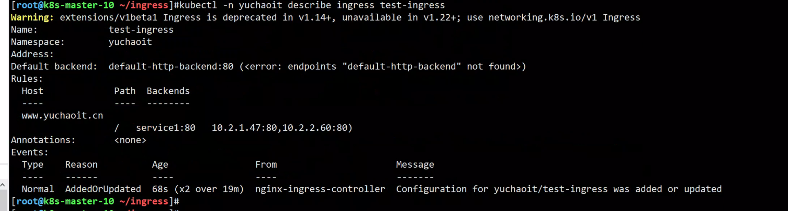
访问七层负载均衡的k8s集群
修改pod首页，查看效果。
kubectl -n yuchaoit exec -it nginx-deployment-6f7886b6db-xsj8n -- bash -c 'echo "<meta charset=utf8>于超老师带你学k8s，222" > /usr/share/nginx/html/index.html'
kubectl -n yuchaoit exec -it nginx-deployment-6f7886b6db-pvjd5 -- bash -c 'echo "<meta charset=utf8>于超老师带你学k8s，111" > /usr/share/nginx/html/index.html'
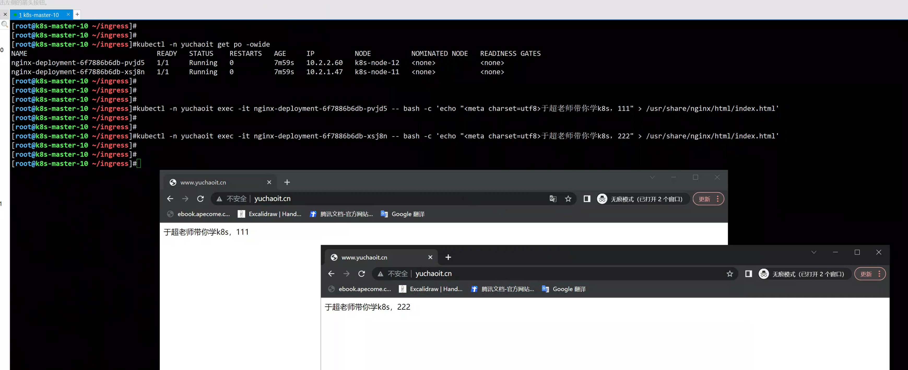
ingress七层代理原理（面试背）
在生产下，ingress的七层域名，就直接绑定到SLB的地址即可。
1. ingress controller 通过和 api-server交互，动态感知集群中ingress规则的变化
2. ingress controller 读取ingress规则，也就是你们的业务域名，对应哪个Service、自动生成nginx配置，再写入到ingress控制器所处的pod，里面的nginx.conf
3. 自动reload nginx，实现域名，配置动态更新。
grep -E '[a-z]' /etc/nginx/conf.d/yuchaoit-test-ingress.conf
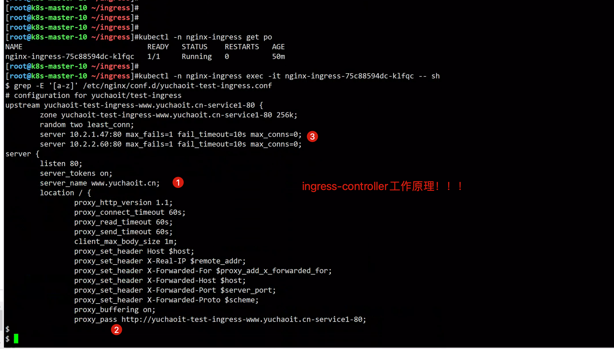
再加一个域名怎么玩？
生产下，必然有多个域名、多个业务
还是按照如此的部署逻辑流程
1. 运行后端pod
2. 运行Service实现pod代理
3. 运行ingress控制器，创建ingress七层代理规则，域名匹配，实现如更复杂的多重url，url重写，就是要进一步再看Ingree的规则编写。